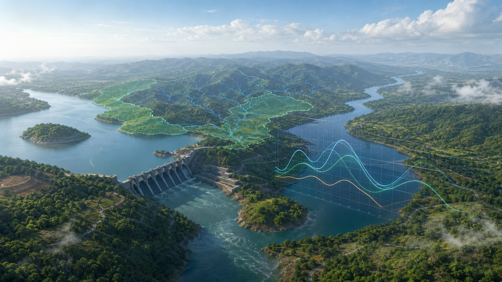
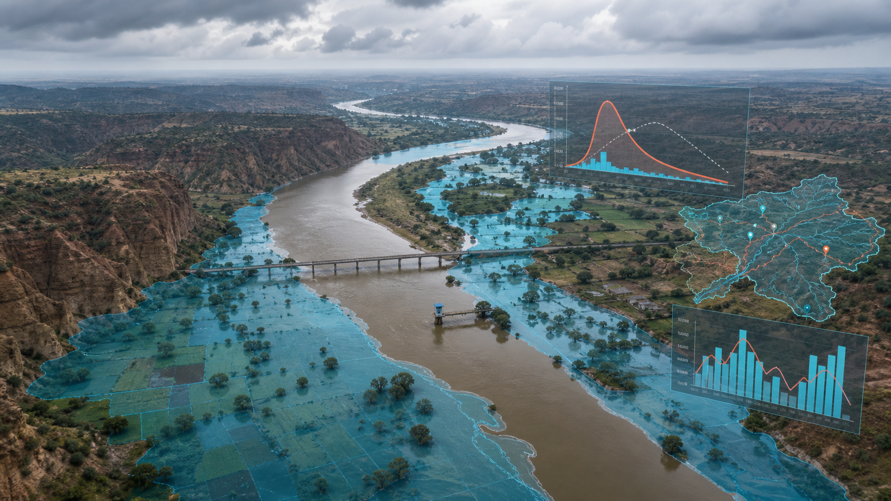
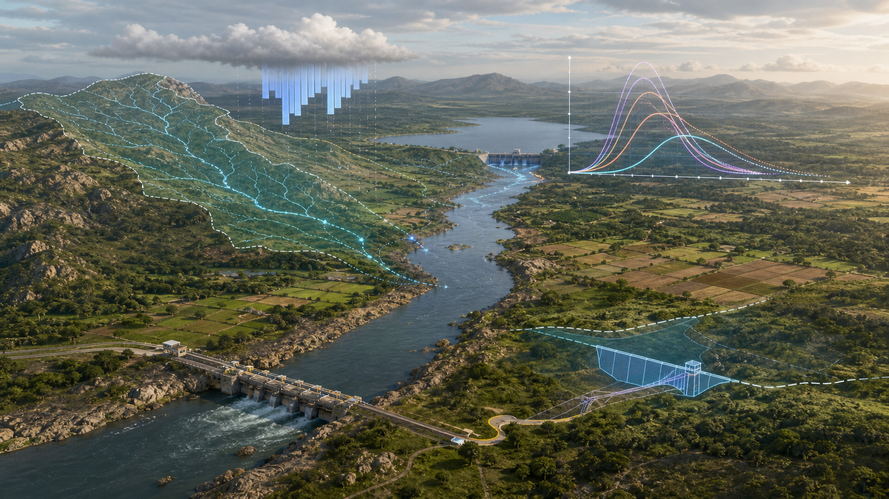

AI, Geospatial Intelligence and Water Analytics
NITA AI & GEOANALYTICS (OPC) PVT LTD
An industry-forward geospatial AI company transforming hydrology, flood estimation, dam planning and basin intelligence into decision-ready digital workspaces for engineers, planners and water-resource agencies.
Realistic 3D Basin Intelligence
Presentation visuals for river hydrology, flood inundation, hydrograph interpretation and future dam-planning workflows.

Narmada basin model view
Sub-basin hydrology, reservoir context, HMS-linked drainage and unit hydrograph response in one planning frame.

Chambal flood inundation
Floodplain spread, GD-site interpretation and routed flood response for return-period review.

Betwa design flood planning
Rainfall-runoff conversion, SUG hydrographs and project screening context for future structures.